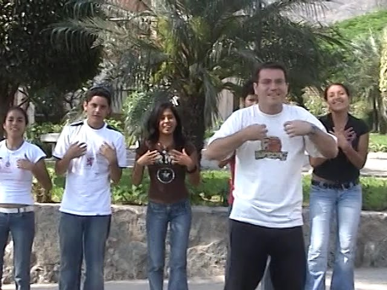
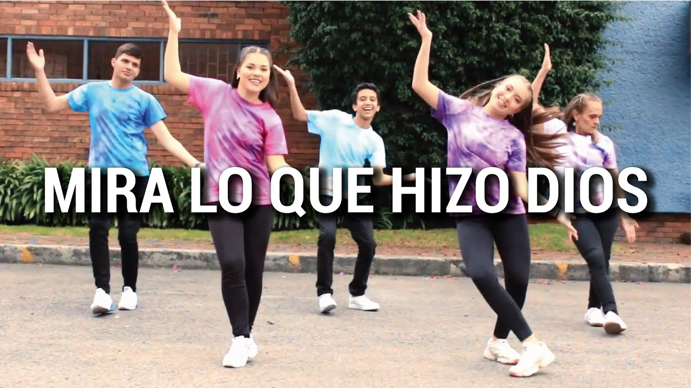
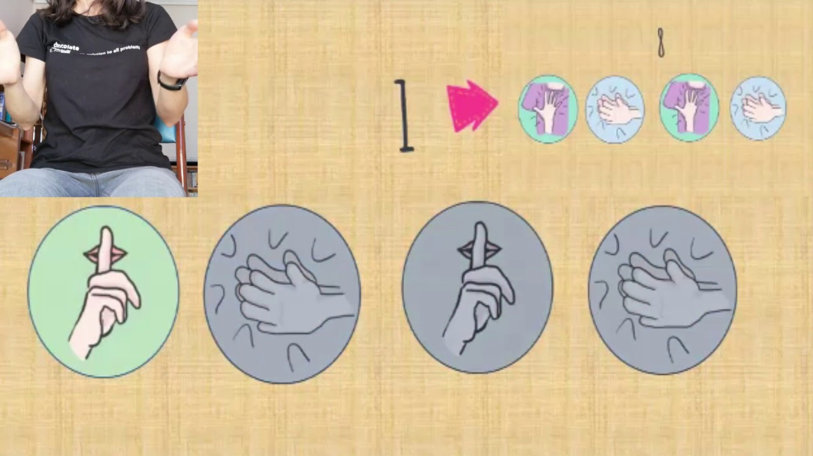
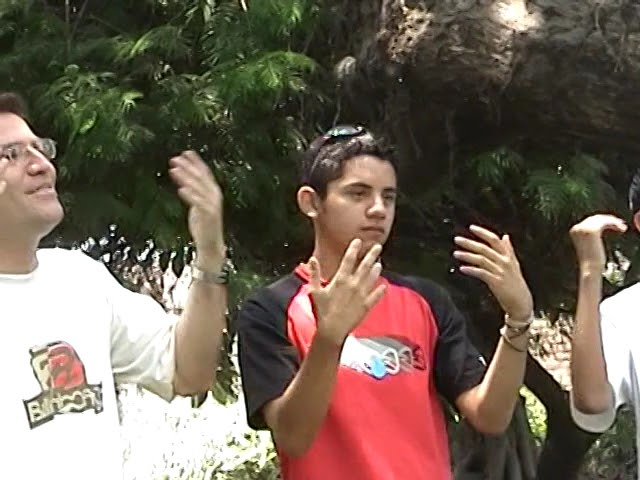
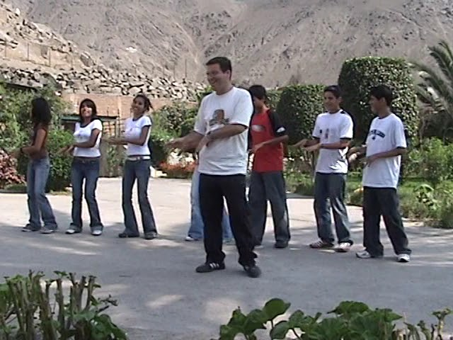
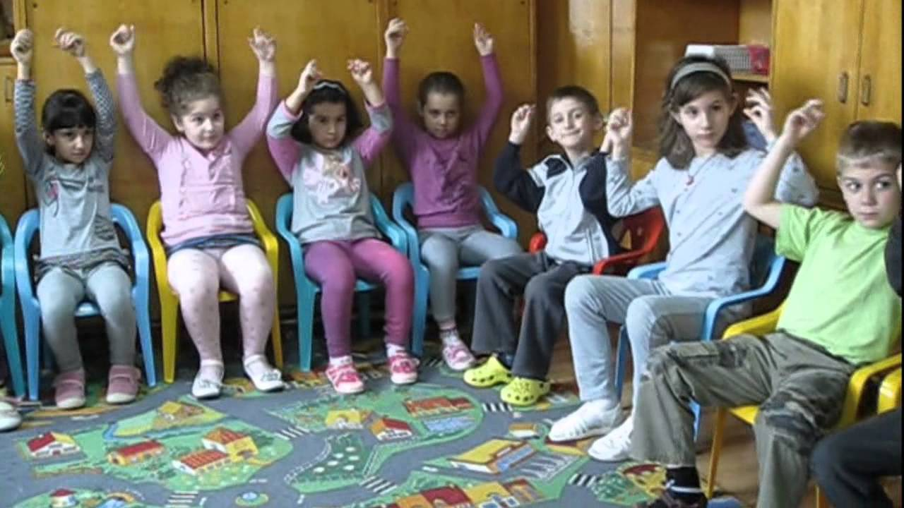

Área Espiritual
La espiritualidad en el corazón Salesiano
La espiritualidad salesiana
Constituye una forma particular de seguir a Jesucristo, inspirada en el ejemplo de San Juan Bosco y caracterizada por una especial sensibilidad hacia ciertos rasgos de Jesús revelados en los Evangelios. (Familia Salesiana de Chile, s.f.) Se considera que esta espiritualidad es una expresión viva del amor de Dios hacia los jóvenes, que impulsa a servir con alegría, sencillez y entrega, haciendo presente el rostro de Cristo en cada realidad educativa y pastoral.
La dimensión espiritual- trascendente
Implica la capacidad del ser humano de ir más allá de su situación actual, buscando de manera constante su evolución y perfeccionamiento personal. (Familia Salesiana de Chile, s.f.) Considero que esta dimensión invita a mantener una apertura continua a Dios, fuente de todo crecimiento interior. Es un llamado a vivir en permanente renovación espiritual, reflejando su amor en la labor educativa.
Es un río
Desarrollo Espiritual
Grado: 5.º y 6.º de primaria
Objetivo: Fomentar la reflexión interna reconociendo sus experiencias, desafíos y aprendizajes, y promoviendo la conciencia de su propio crecimiento espiritual.
Motivación: Se invita a los participantes a imaginar su vida como un río, con momentos de calma, obstáculos y aprendizajes. El audiovisual de un río ayuda a crear un ambiente relajado, favoreciendo la introspección y la apertura al diálogo.
Mira lo que hizo Dios
Desarrollo Espiritual
Grado: 6.º de primaria
Objetivo: Expresar la fe y la alegría a través del baile.
Motivación: Preparar un espacio amplio y seguro. Practicar los movimientos con los niños. Reflexionar sobre el mensaje de la canción.
Rítmica
Desarrollo Espiritual
Grado: 6.º de primaria
Objetivo: Expresar la espiritualidad a través del movimiento.
Motivación: Escuchar la música y mostrar los movimientos básicos. Practicar la secuencia de movimientos junto con los estudiantes. Cerrar con reflexión sobre el mensaje de la música y los movimientos.
Cristo presente
Desarrollo Espiritual
Grado: 6.º de primaria
Objetivo: Reconocer la presencia de Cristo en la vida diaria a través de una dinámica grupal.
Motivación: Explicar que Cristo está presente en cada centro educativo. Realizar una breve actividad participativa (por ejemplo: compartir una frase, gesto o reflexión que exprese la presencia de Cristo). Cerrar con un canto o una oración corta en grupo.
Tenemos tanto
Desarrollo Espiritual
Grado: 6.º de primaria
Objetivo: Reconocer dones y bendiciones, fortaleciendo la gratitud y la espiritualidad.
Motivación: Acompañar a los estudiantes a ser agradecidos con sus mayores y principalmente con Dios. Reflexionar en grupo sobre la importancia de reconocer y agradecer los dones recibidos.

Pablito
Desarrollo Espiritual
Grado: 4.º a 6.º de primaria
Objetivo: Despertar el entusiasmo para ir a evangelizar en diferentes lugares.
Motivación: Presentar la historia de Pablito y los valores que muestra. Los estudiantes leen o ven la historia. Conversar sobre los valores y cómo aplicarlos en la vida diaria. Dibujar, escribir o listar formas de ayudar a los demás.
Rondo Alla Turca – Mozart
Desarrollo Espiritual
Grado: 1.º a 3.º de primaria
Objetivo: Fomentar la conexión espiritual a través de la música clásica.
Motivación: Se presenta al grupo que la música clásica, como “Rondo Alla Turca” de Mozart, tiene el poder de conectar con lo más profundo del ser. A través de esta dinámica, los estudiantes experimentarán cómo la armonía y el ritmo pueden generar un ambiente de paz y reflexión, promoviendo el bienestar espiritual.
